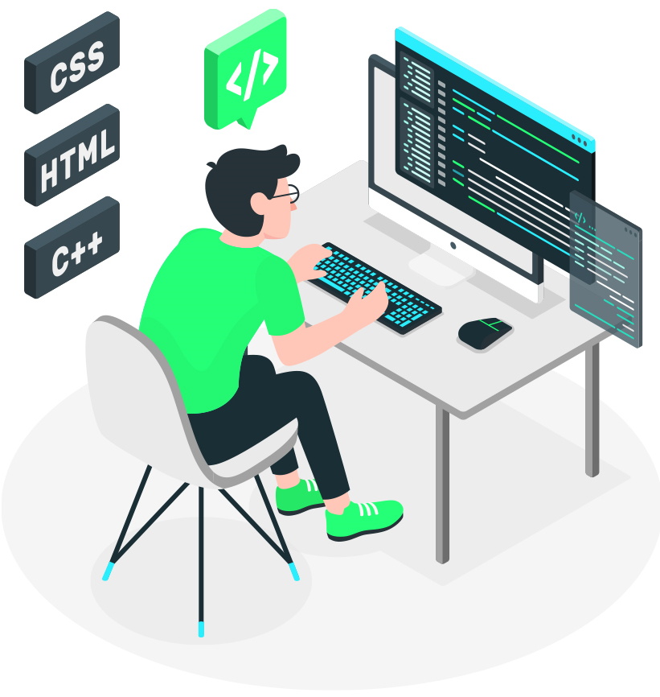

Qué es el Fronted?

El frontend o «desarrollo del lado del cliente» se refiere a la práctica de producir HTML, CSS y JavaScript. Estos tres elementos se encargan de dar forma a la parte frontal de un sitio web o aplicación. Esto incluye los fondos, colores, texto, animaciones o efectos.
Licenciatura en sistemas Computacionales
© Copyright 2022. Anthony Miguel Olivares Zavala.